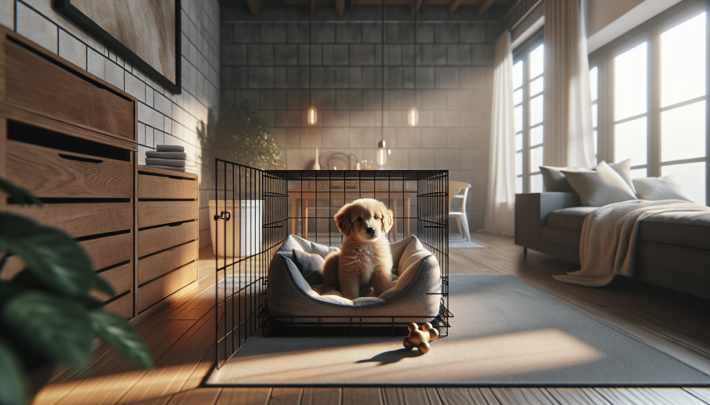

Bringing home a new puppy is exciting, adorable, and often a little overwhelming. Between potty accidents, midnight whining, curious chewing, and figuring out a routine, many new dog owners quickly ask the same question: should I crate train my puppy? The short answer is yes—when done correctly, crate training can be one of the most helpful, humane, and effective tools for raising a confident, well-adjusted dog.
A crate is not a punishment box. In behavior science and modern dog training, a crate is best used as a safe, predictable resting space where your puppy can relax, sleep, and learn healthy habits. It can support house training, prevent unsafe chewing, help with travel and vet visits, and give your puppy a quiet place to decompress. For rescue adopters especially, that sense of structure and security can make a huge difference.
In this complete guide, you will learn how to crate train a new puppy step by step, how long puppies can stay in a crate, what to do about crying, and how to avoid the most common mistakes. The goal is simple: help your puppy feel safe, not trapped.
Crate training works because dogs naturally seek out small, secure resting areas when they want to sleep or feel safe. A properly introduced crate can become that den-like retreat. It also helps you manage your puppy’s environment during the early months when they are still learning what to chew, where to potty, and how to settle.
Some of the biggest benefits of crate training include:
The key is this: crate training should be gradual, positive, and paired with good emotional associations. If the crate predicts safety, rest, food, and calm, your puppy is much more likely to accept it willingly.
Before training starts, make sure the crate itself is working for your puppy, not against them. Most puppies do well with a wire crate, plastic airline-style crate, or sturdy fabric crate for supervised use. For house training, the size matters. Your puppy should be able to stand up, turn around, and lie down comfortably—but not have enough room to sleep at one end and potty at the other.
If you have a large-breed puppy, choose a crate with a divider so you can expand the space as they grow. Place the crate in a quiet but social area of the home, such as the living room during the day. At night, many puppies do best with the crate near your bed at first, which can reduce stress and help you respond quickly to potty needs.
Set the crate up to feel comfortable and safe:
For some rescue puppies or highly sensitive dogs, less is more. Too much bedding, noise, or stimulation can make it harder to settle. Watch your puppy’s behavior and adjust the setup based on what helps them relax.
The best crate training starts before you ever close the door. Think of the process as building trust in small layers. Your puppy should first learn that entering the crate is their choice and that good things happen there.
Here is a simple step-by-step approach:
Short, frequent sessions are better than long, stressful ones. Aim for success, not endurance. If your puppy cries intensely, paws frantically, or refuses food, the training moved too fast. Go back a step and rebuild confidence.
Crates are especially useful when paired with a predictable daily routine. Puppies thrive on structure, and regular cycles of potty, play, food, training, and rest help them settle faster.
During the day, use the crate for scheduled naps. Many puppies need far more sleep than owners expect—often 18 to 20 hours in a 24-hour period. If your puppy gets zoomy, bitey, or unable to focus, they may be overtired. A calm potty break followed by a food toy in the crate can help them wind down.
At night, take your puppy out to potty right before bedtime. Then guide them into the crate with a treat or chew. Keep your response calm and boring if they wake overnight for a bathroom trip. No play, no excitement—just out, potty, and back in.
For house training, the crate helps prevent accidents when you cannot supervise. But it is not a substitute for frequent potty breaks. Young puppies need to go out often, especially:
A helpful rule of thumb is that very young puppies can only hold it for short periods during the day. Many need a potty break every 1 to 2 hours at first, and overnight capacity varies by age, breed, health, and individual development. Always prioritize your puppy’s actual needs over generic timelines.
This is one of the most common questions, and the answer depends on age, temperament, training history, and whether your puppy has had enough exercise, enrichment, and bathroom opportunities. In general, puppies should not spend long stretches in a crate during the day. Crates are management tools, not places for extended isolation.
As a general guideline:
Even if a puppy can physically “hold it,” emotional readiness matters too. A puppy who is panicking in the crate is not learning independence—they are practicing distress. Balance crate time with training, movement, social bonding, sniffing walks, play, and rest outside the crate.
If you work long hours, make a realistic plan. Arrange for a dog walker, pet sitter, trusted friend, family member, or safe puppy playpen setup. Successful crate training depends on meeting both physical and emotional needs.
Some whining is normal, especially in the first few nights away from littermates. Your puppy may be confused, tired, or need a bathroom break. The goal is not to ignore every sound or rush in at every peep. Instead, learn to distinguish between mild protest and genuine distress.
Try this approach:
If your puppy is screaming, drooling, biting the bars, or unable to settle despite gradual training, this may be more than normal adjustment. Some dogs struggle with isolation distress or confinement anxiety. In those cases, a slower plan—or help from a qualified force-free trainer or veterinary behavior professional—can make a major difference.
Many crate problems are not really crate problems—they are pacing problems, expectation problems, or routine problems. Avoiding a few common mistakes can speed up progress dramatically.
Remember that crate training is not about forcing compliance. It is about teaching calmness through predictability, positive association, and repetition.
Crate training a new puppy can make life easier, but more importantly, it can help your puppy feel secure in a brand-new world. When introduced thoughtfully, a crate becomes a useful tool for house training, sleep, safety, travel, and building independence. The process works best when you move at your puppy’s pace, create positive associations, and pair the crate with a healthy daily routine.
If you are a new puppy parent or rescue adopter, give yourself permission to go slowly. Progress is rarely perfectly linear. Some nights will be messy, some naps will be short, and some puppies will need extra reassurance. That is normal. Stay consistent, keep sessions positive, and focus on helping your puppy feel safe.
Get our full Dog Training eBook series — new titles added weekly.